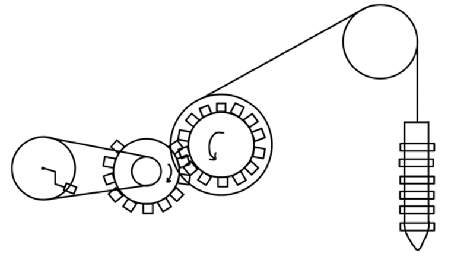
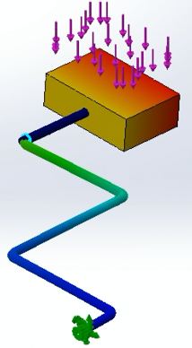
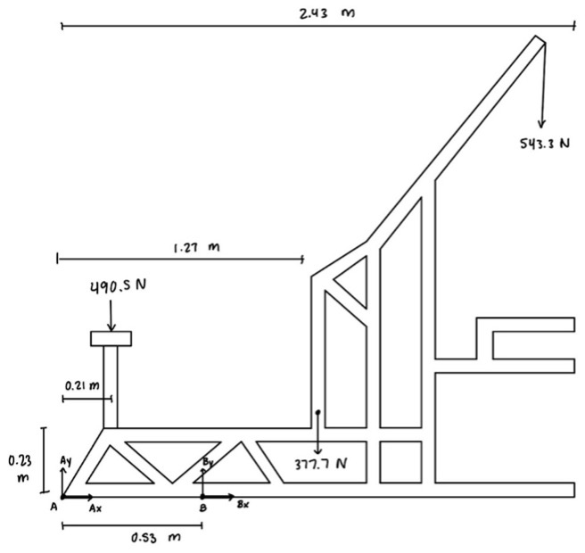

Well Driller
Designing a pedal-powered well drilling system that converts human input into repeated impact.
In a team of three, I helped redesign the Village Drill to replace its existing power input with a pedal-driven system for use in Baalbek-Hermel, Lebanon. We developed the system from concept selection through mechanical design, structural analysis, FEA, and power calculations.
I focused on how different gear mechanisms could integrate with the existing drill architecture and performed the hand calculations used to size and evaluate the final system. The selected design uses a pedal-driven pile-driver mechanism that lifts the drill through a geared cable system, then releases it to fall under its own weight.
Concept Development
We began by defining requirements around drilling performance, durability, ease of assembly, transportability, safety, and power efficiency. The design also needed to retain as much of the existing Village Drill architecture as possible.
I researched how different gear mechanisms could convert pedal rotation into the motion required by the drill and considered how each could be packaged within the existing system. We developed three concepts using worm gears, bevel gears, and a pile-driver mechanism.
We selected the pile-driver architecture because it uses pedal input to raise the drill, then converts its gravitational potential energy into impact when released. This was well suited to the rocky ground conditions identified for the target region.

Mechanical Design
Pedal rotation is transmitted through a chain and gear system to a cable pulley that raises the drill. One gear includes a section without teeth. When this section reaches the mating gear, the drivetrain disengages and allows the drill to fall freely. The gears then re-engage and repeat the cycle.
The design retained much of the Village Drill frame while integrating the pedal system, gearbox, cable drive, and drill-lifting mechanism into the existing architecture.
Engineering Analysis
I performed the hand calculations used to determine the cable tension, pedal force, frame reactions, pin sizes, and power requirements of the system. Working backward from the drill weight and drivetrain geometry, I calculated a required pedal force of approximately 4.41 N to lift the drill.
I then calculated the reaction forces at the frame supports and sized critical pins based on the resulting shear loads. I used a factor of safety of 4 for the primary structural connection, where failure could destabilize the frame, and a factor of safety of 2 for the lower-risk pedal connection. The resulting minimum pin diameters were approximately 4.16 mm for the main structural connection and 0.233 mm for the pedal- force connection.
I also calculated the system power requirements and relationship between pedal speed and drill motion. At the analyzed operating point, the user supplies approximately 4.4 W, while the gearing produces an output rotational speed about five times the pedal input speed.
The team used FEA to evaluate stress and deformation in the titanium pedal under the calculated operating load.



Finally, we calculated the mechanical power required to operate the drilling mechanism. This allowed us to determine the approximate pedal rotation rate needed to achieve the required drilling cycle and assess whether the system was practical for human operation.
Results
The analysis indicated that the pedal-powered concept was mechanically feasible under the assumed operating conditions. The required pedal force remained practical for human operation, and the calculated structural connections met the selected safety factors.
The design process also identified areas for further development, particularly the effects of repeated impact loading on system durability and the need to integrate the gearbox earlier in the overall architecture.